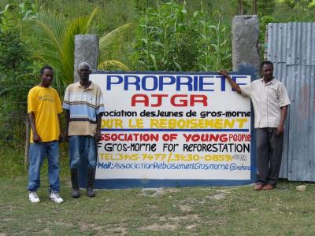

Gros-Morne (Haïti)
Gros-Morne (Haïti): Association des jeunes de Gros-Morne pour le reboisement (AJGR)

L'objectif général de l'Association est de contribuer au bien-être et à l'émancipation de la jeunesse Gros-Mornaise sur les plans moral, social et culturel.
Objectifs spécifiques:
- Promouvoir la participation de la jeunesse Gros-Mornaise dans la mise en oeuvre d'activités socioculturelles liées à la santé, l'éducation, la culture, l'agriculture et l'environnement.
- Appuyer le développement communautaire par le reboisement, l'education et la formation des jeunes
- Encourager la promotion de la femme.
- Participer à son éducation civique.
- Sensibiliser les jeunes sur les problèmes environnementaux.
- Promouvoir la culture Haitienne.
TRAGELUS Wilson
Président, AJGR/ Terre des Jeunes de Gros-Morne
E-mail: associationreboisementgrosmorne@yahoo.fr
Téléphones : (509) 32323759/ 33928258/ 33569211/ 36018842/ 32245349/ 33960536
Adresse : Cressac, localité Médéric, Gros-Morne (Gonaives)
Département de l'Artibonite, Haiti (W.I.).
.png)
Gros-Morne (Haïti): Plantation d'arbres à Gros-Morne en collaboration avec MyTree


A l'occasion de la journée internationale de l'environment, 5 juin 2020, AJGR/ Terre des Jeunes de Gros-Morne ne restait pas avec les bras croisés.
Ainsi, une grande activité a été organisée à Moulin 7e section communale de Gros-Morne aux fins de mettre en terre des plantules.
Au cours de cette journée, environ cinq cent quatorze (514) arbres ont été mis en terre: 105 avocatiers, 197 manguiers, 63 cerisiers, 22 tamarins, 7 corossoliers, 116 orangers et 4 grenades. De ce fait, elle sollicite le support financier des gens qui apprécient et qui savent bien ce que les arbres representent pour l'homme. AJGR/ Terre des Jeunes envoie un remerciement très specialement á : My Tree, Albert Albala, Me Guerby Bernard, Ing. Marc Erland Dezulma, Agro Guy Marie Garçon et Me Charden Bellora Charles.
En consequences, AJGR/ Terre des Jeunes attend tous ceux qui veulent coopérer avec elle pour le reboisement de notre commune (Gros-Morne) et pourquoi pas le pays (Haïti). L'heure est au reboisement, formons un faisceau pour le faire.
Wilson TRAGELUS
président AJGR/Terre des Jeunes de Gros-Morne
Gros-Morne (Haïti): Compte-rendu sur les 600 arbres plantés à Gros-Morne avec la collaboration de My Tree


Grâce à la collaboration de My Tree, AJGR/Terre des Jeunes de Gros-Morne ont fait une plantation le 24 et 25 juin 2019 dans la localité de Faguet 7eme section communale de Gros-Morne. Ainsi, une grande activité a été organisée aux fins de mettre en terre des plantules.
Il faut souligner que ces arbres ont été plantés au nom de My Tree qui a supporté AJGR / Terre des Jeunes de Gros-Morne financièrement.
Au cours de ces deux journées, environ six cents neuf (609) arbres ont été mis
en terre.
Espèces plantées : 5 manguiers, 78 citronniers, 89 avocatiers, 11 orangers, 27 chaines et 399 acacias
AJGR/Terre des Jeunes de Gros-Morne veut attirer l’attention de tout un chacun, quel que soit la nationalité, la couleur, qu’elle est plus déterminée que jamais à participer activement dans la protection de l’environnement en mettant toujours des arbres en terre. De ce fait, elle sollicite le support financier des gens qui apprécient et qui savent bien ce que les arbres représentent pour l’homme.
Elle profite de cette occasion pour prodiguer des mots de remerciements à qui ont l’habitude de lui supporter financièrement pour la réalisation de cette magnifique forêt à Médéric, mais elle envoie un remerciement très spécial à toute l’Equipe de Terre des Jeunes du Canada et à M. Augustin Terre des Jeunes des Gonaïves.
En conséquence, AJGR / Terre des Jeunes de Gros-Morne attend tous ceux qui veulent coopérer avec elle pour le reboisement de notre commune (Gros-Morne) et pourquoi pas le Pays (Haïti). L’heure est au reboisement, formons un faisceau pour le faire.
Gros-Morne, le 25 juin 2019
WILSON TRAGELUS
Président AJGR/Terre des Jeunes de Gros-Morne (Haïti)
Gros-Morne (Haïti): AJGR/TDJ Gros-Morne et sa participation au 20e de TDJ en Haïti


L’Association des Jeunes de Gros-Morne pour le Reboisement (AJGR)/ Terre des Jeunes est un mouvement qui œuvre quotidiennement pour un environnement propre et vert.
Ainsi :
Suite à la réalisation du 20eme anniversaire de la présence de Terre des Jeunes en Haïti, AJGR/Terre des Jeunes de Gros-Morne a organisé une rencontre avec ses membres en date du 26 juillet 2018 dans son petit coin de paradis à Médéric/Gros-Morne.
Au cours de cette rencontre, le Comité de ladite Association y compris les membres ne cessent pas de s’adresser des mots de félicitations au président de Terre des Jeunes des Gonaïves en l’occurrence le Sieur Dieuseul Augustin qui prouve qu’il a un grand amour pour l’environnement ainsi que, pour la façon dont il a travaillé pour la pleine et entière réussite du 20eme anniversaire de la présence de Terre des Jeunes en Haïti, un 20eme anniversaire qui a été réalisé à Passe Reine, 2eme section communale de la commune d’Ennery.
Nos remerciements s’en vont à l’endroit des membres de Terre des Jeunes Transnational qui ont répondu présent lors de cette activité les 12,13, 14 et 15 juillet 2018. Merci beaucoup pour votre présence, votre dévouement pour améliorer notre environnement. Un remerciement très spécial à Mme Lydie Servanin pour les maillots ainsi que les Certificats. Nous en sommes très satisfaits.Lire la suite
Gonaïves, Haïti, Gros-Morne (Haïti): Financement de My Tree pour la plantation d'arbres en Haïti 2017: Compte rendu


My Tree (https://www.my-tree.com) est une société française qui offre la possibilité aux internautes de payer pour la plantation d'un arbre par des ONG locales dans plusieurs pays du monde. Terre des jeunes est le partenaire de My Tree en Haïti (https://www.my-tree.com/fr/projets/13), et à ce titre nous avons reçu le 12 janvier 2017 un paiement pour la plantation de 1000 arbres dans la région des Gonaïves, Haïti.
Terre des jeunes Gonaïves en collaboration avec Terre des jeunes Gros Morne ont procédé à la préparation des arbres en pépinières et la plantation le 5 juin 2017.
480 arbres ont été plantés à Gros-Morne, dans une zone boisée gérée par Terre des jeunes. Voir les coordonnées.
700 arbres ont été plantés à Passe-Reine, une zone montagneuse près des Gonaïves particulièrement touchée par l'érosion et les tempêtes de 2004 et 2008. Cette Gérée par la communauté. Deux sites ont été ciblés: Passe-Reine et Ze Pelin, près de Passe-Reine.
Des volontaires internationaux et des bénévoles d'écoles locales étaient sur place pour participer aux plantations.
Les essences d'arbres plantées sont:
- Manguier (40%)Lire la suite
Gros-Morne (Haïti): Plantation d'arbre à Gros-Morne


Bonjour à tous et toutes
L’Association des Jeunes de Gros-Morne pour le Reboisement AJGR / Terre des Jeunes lute à côté de la population Gros-Mornaise pour l’aider à surmonter certaines difficultés dans le domaine du reboisement et de la conservation de sols. Suite à coupe abusive d’arbres qui se fait partout dans le pays ; dans la localité de Moulin 7eme Section Communale de Gros-Morne Terre des Jeunes de Gros-Morne va planter des arbres fruitiers, tels que : La mangue francique l’avocatier ….. Nous allons construire un espace en arbre fruitier seulement grâce à la collaboration de My Tree (http://www.my-tree.com/fr/ projets/13). Les pays tropicaux sont connus pour la bonne qualité de leurs fruits grâce à leur climat propice à la culture. Haïti, pays de la Caraïbe, n'échappe pas à cette règle. Premier exportateur de Vétiver dans le monde, le pays est connu aussi pour la qualité et le bon goût d'un de ses fruits : la mangue. A l'heure actuelle, parmi toutes les variétés cultivées en Haïti, seule la mangue Francisque fait l'objet d'échanges internationaux, car elle est la seule espèce locale pouvant supporter sans altération de ses caractéristiques physiques et organoleptiques et sans diminution de sa valeur nutritive, le traitement par immersion dans l'eau chaude imposée par USDA à toutes les mangues expédiées vers les États-Unis. La mangue Francisque, produite seulement en Haïti, est très aimée par les consommateurs nord-américains.
Pour Terre des Jeunes de Gros-Morne, voici les activités à entreprendre du mois de mai et juin 2017 à Moulin 7ème Section Communale de Gros-Morne:
1-Mobilisation de 107 jeunes et les membres de Terre des Jeunes.
2-Sarclage pour enlever les mauvaises herbes et aménagement de cette portion de terre en structures biomécaniquesLire la suite
Gros-Morne (Haïti): Retour sur le camp d'été 2016 à Gros-Morne, Haïti


Au cours de la vacance d’été 2016, L’Association des Jeunes de Gros-Morne pour le Reboisement (AJGR)/ Terre des Jeunes ne reste pas sans rien faire. C’est ainsi que le comité exécutif de la dite Association a pris l’initiative pour qu’il puisse organiser un camp d’été à Garcin, une localité relevant de la première section communale de Gros-Morne, du vendredi 22 au 24 Juillet 2016. Le but de ce camp d’été est :<> et l’objectif général c’était de :<< Préparer pour le nouvel exercice octobre 2016-septembre 2017 d’une part, le chronogramme d’activités, le budget alloué à ces activités, de manière à maximiser les potentiels de nos forces et des opportunités s’offrant à nous et à minimiser les effets de nos faiblesses et des menaces auxquelles fait face L’AJGR / Terre des Jeunes de Gros-Morne au sein de la commune, d’autre part de réfléchir sur l’amendement de nos règlements internes. Depuis le jour où l’idée nait jusqu’au 22 juillet 2016, le comité ne cesse jamais de réfléchir sur la réalisation de ce camp d’été.Lire la suite
Gros-Morne (Haïti): Gros-Morne, Haïti: Camp d'été 2016

Avec une participation de 30 personnes, nous concentrerons, pendant ces trois (3) jours, sur les actions à entreprendre afin de renforcer les stratégies de changement social et de comportement, d’améliorer la vie des gens de la commune, de lutter contre le déboisement et de sensibiliser la population sur le problème de réchauffement climatique.
VOIR LE PDF CI-JOINT POUR DÉTAILS.
Gonaïves, Haïti, Gros-Morne (Haïti): Journée mondiale de l'environnement dans la commune de Gros-Morne


Chaque 5 juin, on célèbre la Journée de l’environnement, où l’on met les arbres en valeur. Cette année, en ce 5 juin 2016, l’Association des Jeunes de Gros-Morne pour le Reboisement (AJGR) / Terre des Jeunes de Gros-Morne était au rendez-vous.
En prélude à cette journée, l’Association des Jeunes de Gros-Morne pour le reboisement (AJGR) Terre des Jeunes a organisé plusieurs activités dans la journée du samedi 04 juin 2016 dont :
* Creusement des trous
* Mise en place des plantules
* Emission de radio pour sensibiliser la population non seulement sur l’importance des arbres, mais également sur la réalisation de cette grande activité.
Pour réaliser cette journée de sensibilisation nous avons invité différentes institutions de la communauté Gros-Mornaise, notamment les écoles, Croix-Rouge, Kiro, Association des femmes et toutes les institutions étatiques de la commune.
Enfin, la journée du 5 juin est arrivée. Des 9 heures 30 minutes du matin, les activités démarrées. Nous avons eu une conférence sur l’importance des arbres dans l’environnement. Ensuite, nous avons organisé des promenades guidées au sein de la forêt d’AJGR communément appelée « Coin des Paradis ». Par la suite, nous avons mis en terre 217 arbres fruitiers et forestiers et à la fin de la journée, nous avons procédé à la distribution de kits aux participants. Ces matériels (kits), nous les avons reçus de la part de la MINUSTAH. Sur les boquittes et les kepis que nous avons distribués, il y a la mention suivante : Ann chwazi lapè, Vyolans ap detwi lavi nou.
Nous devons aimer les arbres parce que de notre berceau à notre tombe, les arbres nous accompagnent.
C’était une journée vraiment magnifique à Médéric au sein du paradis construit par AJGR.Lire la suite
Gonaïves, Haïti, Gros-Morne (Haïti): Collaboration entre Terre des jeunes Gonaïves et Gros-Morne pour la Fête de l'arbre 2016


La journée 5 Juin, journée Mondiale de l’Environnement n'est pas restée inaperçue en Haiti, particulièrement entre les groupes de TERRE DES JEUNES Gros-morne et celui de Gonaives.
Plusieurs centaines d'arbres ont été plantés avec des enfants en signe du transfert de la responsabilité à la génération future.
Des distributions de seaux ont été faites aux familles les plus vulnérables pour augmenter leur stockage et conserver beaucoup plus d'eau en cette saison cyclonique qui a débutait le 1e juin.
Conférence débat avec les jeunes, avec les participants etc..
6 écoles, 3 organisations pour un total dépassant plus de 200 participants.
Wilson, Evens, Joël et Johnny étaient les principaux organisateurs
Augustin
Gros-Morne (Haïti): 11517 arbres recensés à Gros-morne


TERRE DES JEUNES Gros-Morne – HAITI : 11517 arbres de plus 4 mètres de haut ont été recensés à Gros-morne sur le terrain de Mederick. Environ 20 000 arbres ont été plantés par les bénévoles depuis bientôt 10 ans. Il s'agit d'un endroit vraiment paradisiaque, avec une grande couverture végétale, où vous rêveriez d'être aujourd’hui .
Découvrez-le sans plus attendre, avec un large choix pour vos séjours de camping, vos vacances et vos formations professionnelles en plein air, dans le respect de la nature, pour un écotourisme réel. Il y a même un local situé sur le terrain et des toilettes rudimentaires. À vous d'en profiter!
Gros-Morne (Haïti): AJGR est en deuil
La famille de Terre des Jeunes à Gros-Morne est en deuil. Le fondateur de l'Association des Jeunes de Gros-Morne pour le Reboisement (AJGR), TRAGELUS Chérubin, ex-Juge de paix de la commune de Gros-Morne, ex-coordonnateur national du Programme Citoyen pour la Reforme de la Justice pour la Commission Episcopale Nationale Justice et Paix, Ex-President du conseil d’Administration GARR (Groupe D’Appui Rapatrié et Refugié) est décédé aux Gonaïves le 22 décembre 2015. Un coup dur pour la famille. Les funérailles auront liées le 2 janvier 2016 à Moulin 7eme section communale de Gros-Morne.
TRAGELUS Wilson son petit Frère
Gros-Morne (Haïti): Étapes de reboisement de la commune de Gros-Morne, Haïti


Par des reliefs accidentés et des mornes constitués en zigzag, Gros-Morne représente un site émerveillé pour la disposition de ses huit sections communales rangées en arc de cercle périphériquement placée par ordre autour de la ville. D’une rotation régulière en se tournant sur soi-même, on peut se compter les sections communales de l’index. Une énorme morne flaqué à quelque 3 km de la ville offre l’aisance au reboisement. L’érosion dénude systématiquement les terres escarpées de ce morne et les eaux sauvages y déferlent à une allure rapide pour se jeter à la ville. Ces malfaisantes eaux y créent des flaques nocives à la circulation des véhicules.
Sa rapidité de ces eaux sauvages font plus de tort aux habitants de la ville et aux zones avoisinantes. Elles détruisent sans merci les constructions et y déposent des terres alluvionneuses. Ces eaux, en furie vont grossir les trois rivières qui constituent l’origine de l’éboulement et de glissement de terrain sur la berge de cette dernière.
La reconstitution du manteau végétal par le remplacement des arbres disparus par la coupe abusive, s’avérerait utile pour la communauté.
L’Association des Jeunes de Gros-Morne pour le Reboisement AJGR / Terre des Jeunes lute à coté de la population Gros-Mornaise pour l’aider à surmonter certaines difficultés dans le domaine du reboisement et de la conservation de sols.Lire la suite
Gros-Morne (Haïti): Reboisement à Gros-Morne: En un clin d’œil, Haïti peut être reboisée !


L’Association des Jeunes de Gros-Morne pour le Reboisement AJGR / Terre des Jeunes fut fondée au début du mois de Février 2000. Dès sa fondation, elle avait pour mission de valoriser l’environnement par la plantation d’arbres un peu partout.
Ainsi, après avoir entrepris diverses demandes, la dite Association a finalement eu la chance d’avoir une portion de terre appartienne à l’église catholique de Gros-Morne pour qu’elle pouvait mettre en terre des arbres. A souligner que l’espace en question était comparable à un désert, un lieu non vivable à l’époque.
Vers les années 2002-2003, grâce au précieux support du Rev. Père Ronel Charélus dit Pè Chacha Curé de la Paroisse Notre Dame de La chandeleur à l’époque et de Lise Brosseau, une Sœur Canadienne, des démarches ont été faites et AJGR a eu l’opportunité d’avoir des moyens financiers aux fins de reboiser cette portion de terre.
Maintenant, après plus de douze (12) ans, cet espace est passé de désert en paradis. Car, actuellement, la forêt, située à coté du Collège Jean XXIII de Gros-Morne à l’entrée de la Maison SŒUR Jezi Mari de Gros-Morne. Aujourd’hui cet espace est considéré comme un coin de paradis selon l’avis de plusieurs visiteurs.
AJGR / Terre des Jeunes de Gros-Morne sollicite l’aide de tous ceux et toutes celles qui sont intéressés par l’environnement à apporter main forte avec AJGR/Terre des Jeunes de Gros-Morne aux fins de combattre le phénomène du déboisement en Haïti.
Voir les images avant et aujourd’hui.
TRAGELUS Wilson
Président AJGR / Terre des Jeunes de Gros-Morne, 30 septembre 2015
Gros-Morne (Haïti): Koumbit pour securiser la Forêt D’AJGR/ Terre des Jeunes de Gros-Morne


Depuis plusieurs mois, nous les membres administratifs de l’Association des Jeunes de Gros-Morne pour le Reboisement (AJGR) / Terre des Jeunes ont constaté qu’on a creusé des passages dans la clôture de notre Forêt situé à Médéric. Sur ce, après avoir fait cette remarque, nous avons décidé de remédier la situation.
Ainsi, à l’occasion de la journée du travail et de l’agriculture ce vendredi 1er mai 2015, plusieurs dizaines de membres de la dite association seront déployés un peut partout à travers la Forêt. Le travail de ces membres consiste essentiellement à protéger l’espace contre ceux qui s’amusent à creuser des trous dans notre clôture pour faciliter leur passage et aussi contre les destructeurs qui ne cessent d’abattre des arbres au sein de notre Forêt.
Au cours de cette koumbit, nous présentons également une séance de formation sur l’importance de l’agriculture et de la protection de l’environnement via un professionnel en agronomie.
Comme symbole, nous aurons à mettre en terre des plantules. Cette koumbit débutera des 6 heures du matin jusqu’à 2 heures de l’après-midi.
Nous demandons à tous ceux qui ont l’idée d’abattre notre clôture pour faciliter leur passage ou pour abattre des arbres dans notre Forêt de ne plus continuer avec leur intension. Le cas échéant, des mesures judiciaires seront envisagées.
Ce sera une belle journée d’activité en ce 1er mai 2015 à Médéric au sein de la Forêt d’AJGR / Terre des Jeunes.
Nous réclamons le support financier de tout un chacun, la présence de chaque individu qui manifeste un désir pour la protection de l’environnement.
Protégeons notre belle HAITI en plantant partout des arbres et ainsi nous retrouvons notre HAITI d’antan, La Perle des Antilles.
TRAGELUS WilsonLire la suite
Gros-Morne (Haïti): Un rêve qui devient une réalité

Bienvenue au siège social AJGR / Terre des Jeunes et centre de Formation Communautaire de Gros-Morne (CFCG)
L’association des jeunes de Gros-Morne pour le reboisement (AJGR) fut fondée le 03 Février 2000 par un groupe
de jeunes bénévoles qui désirent apporter leur soutien à la communauté Gros-Mornaise. Cette association est
fondée par Maitre Chérubin TRAGELUS après avoir participé dans une formation sur l’environnement. Il faut dire
que le bénévolat c’est se sentir utile et faire quelque chose pour autrui, c’est le moteur des bénévoles, lesquels
s’impliquent dans des domaines d’activité aussi divers tels que le sport, la culture, l’humanitaire, la santé, la de
défense des droits, la défense de l’environnement et de la biodiversité ou encore l’éducation parmi ces domaines,
AJGR a fait choix de défendre l’environnement. Depuis lors, sa mission est de reboiser en vue de protéger
l’environnement d’où son nom l’indique déjà : Association des Jeunes de Gros-Morne pour le Reboisement (AJGR).
Depuis lors, soit environ quinze (15) ans de cela, l’association se mettait au travail en plantant des arbres sur son
propre terrain situé à Médéric, localité de la commune de Gros-Morne, et nous avons plus de quatre (04) carreaux
de terre qui est totalement reboisés. D’où on peut dire qu’il s’agit d’une merveille, car cette forêt est considérée
par plusieurs visiteurs comme étant un petit coin de paradis.
Dix(10) ans après soit en 2010, l’Association jugeait important de mettre sur pied la construction d’un centre
communautaire à l’intérieur de cette forêt dans le but de réunir les jeunes de la dite Commune pour les sensibiliserLire la suite
Gros-Morne (Haïti): Information et activités

L’importance de l’arbre en milieu urbain et periurbain est primordial pour notre qualité de vie. Sans eux, nous ne pourrions survivre.
C’est pourquoi que depuis plus d’une decenie , l’Association des Jeunes de Gros-Morne pour le Reboisement (AJGR) ne cesse jamais de donner une importance primordial à la nature (l’environnement) en mettant en terre des arbres de toutes sortes sur son propre terrain se trouvant à Mederic. Ainsi, AJGR a decidé de mettre sur pied d’autres cellules d’AJGR dans les sections communales de Gros-Morne. Chose promise, chose due, aujourd’hui AJGR a déjà crée une cellule AJGR dans la 7e section communal (Moulin) et cette cellule aura pour mission la protection de l’environnement par le reboisement. Avec l’existence de cette cellule, un championat de foot-Ball, sera organize à haut-Moulin du 21 au 27 decembre 2014 à l’occasion de la fȇte Patronale Saint-Jean Evangelique, tout ceci sur le regard vigilant de AJGR. Sur ce, nous reclamons la participation des originaires de Moulin qui vivent ailleurs de porter la main forte, d’apporter
leur support financier et autres pour l’avancement de cette cellule et pour la reussite de ce championat à la fin de l’année 2014, AJGR n’a qu’un seul objectif qui n’est autre que de terminer avec les travaux pouvant lui faciliter à faire fonctionner normalement son bureau dans son siege social à Mederic. Nous ne cesserons jamais de solliciter les aides des personnes avisées, car ells savent que notre travail a une importance capital pour l’environnement et pour la vie humaine. Formons une chaine de solidarité pour la protection de nos arbres.
Gros-Morne (Haïti): FESTI-ECOLOGIQUE A GROS-MORNE


La commune de Gros-Morne a reçu durant la 3e semaine du mois d’août 2013, soit du 17 au 23 août, une délégation venue du canada dont quelques uns d’entre eux sont d’origine haïtienne notamment à Gros-Morne.
Pour ce faire, quelques semaines qui précèdent leur arrivée, ils se sont mis à faire des recherches sur des associations œuvrant dans le domaine de l’environnement et du reboisement. Ainsi, ils ont eu contact avec l’Association des Jeunes de Gros- Morne pour le reboisement «A.J.G.R.». Dès lors, ils ont décidé de travailler de concert avec «A.J.G.R.» pour la réussite de cette activité.
Il faut remercier Jane Dorvilier & Danny Dauphin qui sont les initiateurs du dit festé à Gros–Morne. Le 16 août 2013, l’équipe a fait son apparition dans la cité Paul Prompt. Dès leur arrivée, ils ont rencontré les membres d’A.J.G.R. pour des planifications spécifiques du feste –Écologique. Pour mieux sensibiliser les Gros–Mornais sur les problèmes liés à l’environnement, ils ont organisé des formations sur le recyclage des déchets, participé à des émissions de radio ect., pour démarrer avec les activités. Ils ont lancé la première pierre au sein de la forêt d’A.J.G.R., situé à Médéric, une forêt considérée par plus d’un comme étant un coin de paradis, avec plusieurs dizaines d’enfants, dans le but de les sensibiliser à l’environnement pour qu’eux-mêmes puissent assurer la relève. Après environs 5 heures de formation avec ces enfants ce jeudi août 2013, ils ont mis en terre quelques manguiers franciques comme geste symbolique.Lire la suite
Gros-Morne (Haïti): Plantation pour la Journée mondiale de l'environnement


A l’occasion de la journée Mondiale de l’environnement, ce mercredi 5
juin 2013, l’Association des Jeunes de Gros-Morne pour le Reboisement ne
restait pas avec les bras croisés. Ainsi, une grande activité a été
organisée par la dite association aux fins de mettre en terre des
plantules.
Il faut souligner que ces arbres ont été plantés au nom de Brigitte
Blais, qui a supporté AJGR financièrement.
Au cours de cette journée, environ cinq cents (500) arbres ont été mis
en terre. L'association veut attirer l’attention de tout un chacun,
quelque soit la nationalité, la couleur, qu’elle est plus déterminée que
jamais à participer activement dans la protection de l’environnement en
mettant toujours des arbres en terre. De ce fait, elle sollicite le
support financier des gens qui apprécient et qui savent bien ce que les
arbres représentent pour l’homme.Lire la suite
Gros-Morne (Haïti): Une forêt luxuriante après des années de travail


{kind=link}
{kind=link}
{kind=link}
{kind=link}
{kind=link}
{kind=link}
{kind=link}
{kind=link}
{kind=link}
{kind=link}
{kind=link}
{kind=link}
{kind=link}
{kind=link}
{kind=link}
{kind=link}
{kind=link}
{kind=link}
{kind=link}
{kind=link}
{kind=link}
{kind=link}
{kind=link}
{kind=link}
{kind=link}
{kind=link}
{kind=link}
{kind=link}
{kind=link}
{kind=link}
{kind=link}
{kind=link}
{kind=link}
{kind=link}
{kind=link}
{kind=link}
{kind=link}
{kind=link}
{kind=link}
{kind=link}
Voici un aperçu du terrain géré par AJGR, l'équipe de Gros-Morne. Après des années d'efforts bénévoles, on voit la différence entre le "avant" et le "après". Les images parlent d'elles-mêmes.
Merci à Wilson Tragélus et son équipe pour les photos (et aussi tout le travail !!).
Voici leur histoire :
Le terrain "avant" et le terrain "après"
Depuis plus d’un siècle, il y avait une grande portion de terres qu’on
peut évaluer à plus de dix (10) ha dans la commune de Gros Morne,
notamment dans la localité de Médéric, qui constitue un désert avec
beaucoup de pierres. Peu de temps après la Mairie de Gros-Morne avait
réservé l’espace pour la construction d’une forêt communale, une idée
qui resta sans suite heureuse.
En l’an 2000, on a dû organiser une séance de formation à Port-au-Prince
avec un représentant par commune. C’est ainsi qu’on a a choisi Me
Cherubin TRAGELUS pour aller représenter la commune de Gros-Morne.
L’objectif de cette formation se stipulait ainsi : << Si chaque haïtien
plante un arbre l’année 2004 sera belle >>. Nous ne savons pas pour les
autres représentants, mais quant à Me Chérubin, dès son retour dans la
communauté Gros-Mornaise, il a mis sur pied une association dénommée :
<>.
Depuis lors la dite association ne cesse pas même un jour dans la
poursuite de la concrétisation de cet objectif. Ainsi la Mairie de
Gros-Morne a jugé bon de donner une partie du terrain réservé pour la
forêt communale à AJGR, une portion estimée à environ 4 ha de terres.
Dès lors, nous nous mettions au travail en plantant des arbres de toutes
sortes.
Maintenant après huit (8) ans seulement, si nous faisons uneLire la suite